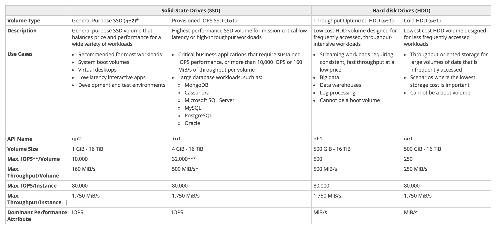
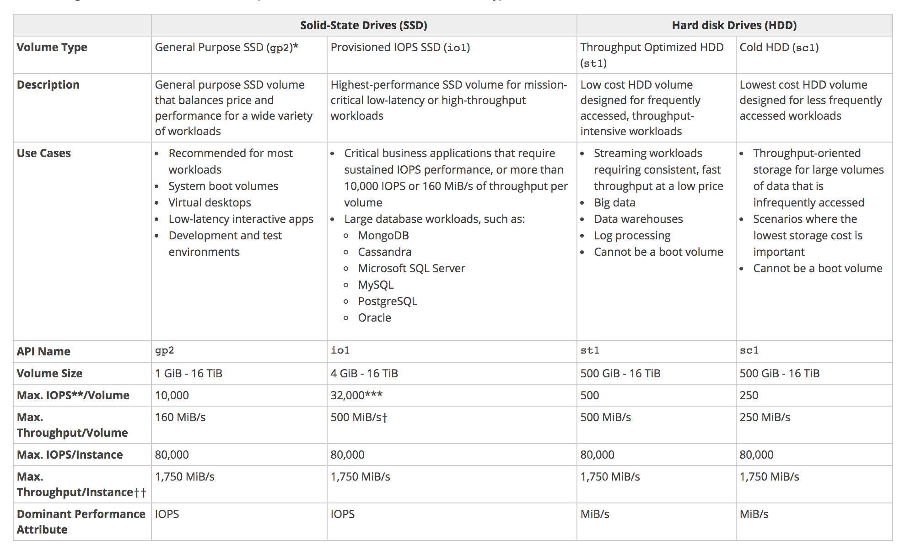

Test Report
Review questions
Jun 17, 2019 04:13AM EDT
 16 correct
16 correct 49 incorrect
49 incorrectYour answer
B. Attach the volume to an instance using EC2’s SSL interface.
C. Create an IAM policy that restricts read and write access to the volume.
D. Use EBS encryption
E. Use an encrypted file system on top of the EBS volume
Correct answer is D as EBS encryption can be used to encrypt EBS volumes.
EBS encryption was launched some time back by AWS. Before the EBS encryption, Option E was the correct answer, as you need to use encrypted file system over EBS volume.
Until today, you needed third-party security tools to encrypt data for EBS volumes. With Amazon EBS encryption, you can now create an encrypted EBS volume and attach it to a supported instance type. Data on the volume, disk I/O, and snapshots created from the volume are then all encrypted. The encryption occurs on the servers that host the EC2 instances, providing encryption of data as it moves between EC2 instances and EBS storage. EBS encryption is based on the industry standard AES-256 cryptographic algorithm.
Option A is wrong as S3 - SSE does not work with EBS.
Option B is wrong as SSL is for data in transit.
Option C is wrong as IAM policy can't restrict read & write access to EC2.
Your answer
B. Enable VPC Flow Logs for the production VPC
C. Enable both CloudTrail and VPC Flow Logs for the production VPC
D. Enable both CloudTrail and VPC Flow Logs for the AWS account
Correct answer is B as the VPC flow logs needs to be enabled for tracking the access to EC2 instances.
Refer AWS documentation - VPC Flow Logs
VPC Flow Logs is a feature that enables you to capture information about the IP traffic going to and from network interfaces in your VPC. Flow log data is stored using Amazon CloudWatch Logs. After you've created a flow log, you can view and retrieve its data in Amazon CloudWatch Logs.
Flow logs can help you with a number of tasks; for example, to troubleshoot why specific traffic is not reaching an instance, which in turn can help you diagnose overly restrictive security group rules. You can also use flow logs as a security tool to monitor the traffic that is reaching your instance
Option A, C & D are wrong as CloudTrail would not help capture access to EC2 instances but only the AWS API calls.
Your answer
B. Expedited retrieval
C. Bulk retrieval
D. Standard retrieval
Correct answer is B as Glacier Expedited retrieval allows a faster retrieval of objects from Glacier within 1-5 minutes.
Refer AWS documentation - Glacier FAQs - Data Retrievals
Q: What are Expedited retrievals?
Expedited retrievals allow you to quickly access your data when occasional urgent requests for a subset of archives are required. For all but the largest archives (250MB+), data accessed using Expedited retrievals are typically made available within 1-5 minutes. There are two types of Expedited retrievals: On-Demand and Provisioned. On-Demand requests are like EC2 On-Demand instances and are available the vast majority of the time. Provisioned requests are guaranteed to be available when you need them.
Option A is wrong as Vault Lock allows you to easily deploy and enforce compliance controls on individual Glacier vaults via a lockable policy (Vault Lock policy). Once locked, the Vault Lock policy becomes immutable and Glacier will enforce the prescribed controls to help achieve your compliance objectives.
Option C is wrong as Bulk retrievals are Glacier’s lowest-cost retrieval option, enabling you to retrieve large amounts, even petabytes, of data inexpensively in a day. Bulk retrievals typically complete within 5 – 12 hours.
Option D is wrong as Standard retrievals allow you to access any of your archives within several hours. Standard retrievals typically complete within 3 – 5 hours.
Your answer
B. Use AWS Kinesis Data Streams to store, process and analyze the data.
C. Use AWS SQS to store the data and analyze the data
D. Use SNS to store the data and analyze the data
Correct answer is B as Amazon Kinesis makes it easy to collect, store, process, and analyze real-time, streaming data so you can get timely insights and react quickly to new information.
Refer AWS documentation - Kinesis Data Streams
Use Amazon Kinesis Data Streams to collect and process large streams of data records in real time.
You'll create data-processing applications, known as Amazon Kinesis Data Streams applications. A typical Amazon Kinesis Data Streams application reads data from a Kinesis data stream as data records. These applications can use the Kinesis Client Library, and they can run on Amazon EC2 instances. The processed records can be sent to dashboards, used to generate alerts, dynamically change pricing and advertising strategies, or send data to a variety of other AWS services.
Your answer
B. Spot Instances + On-Demand Instances
C. Reserved Instances (3 year contract)
D. Dedicated Instances
Correct answer is A as On Demand instances would help provision extra capacity with the availability of these additional instances guaranteed as compared to the Spot instances.
Refer AWS documentation - EC2 Purchasing Options
Option B is wrong as Spot instances might be cost effective but does not guarantee availability
Option C is wrong as using Reserved instances is not cost effective
Option D is wrong as Dedicated instances just provided isolated hardware separated from other clients and has most cost.
Points : 3 out of 3
Your answer
B. Operating system account security management
C. Threat modeling
D. User group access management
E. Static code analysis
C. Threat modeling
E. Static code analysis
Correct answer are A, C & E as AWS handles them as a part of their development cycle.
Refer AWS Security Whitepaper
AWS’s development process follows :-
- Secure software development best practices, which include formal design reviews by the AWS Security Team, threat modeling, and completion of a risk assessment
- Static code analysis tools are run as a part of the standard build process
- Recurring penetration testing performed by carefully selected industry experts
Option B & D are wrong as OS security management and User groups access management using IAM is user responsibility.
Your answer
B. Message 2 uses JSON formatting
C. You failed to set the correct permissions on message 2
D. Your application is using short polling
D. Your application is using short polling
Correct answer is A & D as the message might not have been received cause the application is using Short polling which would not return all the messages and the messages are not received in order and the application was able to process 1 & 3 but hasn't received 2 yet.
Refer AWS documentation - SQS Short Polling & Message Ordering
Amazon SQS uses short polling by default, querying only a subset of the servers (based on a weighted random distribution) to determine whether any messages are available for inclusion in the response.
A standard queue makes a best effort to preserve the order of messages, but more than one copy of a message might be delivered out of order.
Your answer
B. Invite the acquired company's AWS account to join the existing company’s organization using AWS Organizations.
C. Migrate all AWS resources from the acquired company's AWS account to the master payer account of the existing company.
D. Create a new AWS account and set it up as the master payer. Move the AWS resources from both the existing and acquired companies' AWS accounts to the new account.
Correct answer is B as the existing company can be join into existing company using AWS organizations
Refer AWS documentation - AWS Organizations
AWS Organizations helps you manage policies for multiple AWS accounts. With Organizations, you can create groups of accounts, and then attach policies to a group to ensure the correct policies are applied across the accounts. AWS Organizations enables you to set up a single payment method for all the AWS accounts in your organization through consolidated billing.
Your answer
B. Within your application code, make a GET request to the IAM Service API to retrieve credentials for your user.
C. When using AWS SDKs and Amazon EC2 roles, you do not have to explicitly retrieve API keys, because the SDK handles retrieving them from the Amazon EC2 MetaData service.
D. Within your application code, configure the AWS SDK to get the API keys from environment variables, because assigning an Amazon EC2 role stores keys in environment variables on launch.
Correct answer is C as the best practice is to define an IAM role with the EC2 instance which would help automatically generated temporary access keys which are frequently rotated. AWS SDKs and CLI handled the access keys automatically.
Refer AWS documentation - Access Keys Best Practices
Do not pass an access key to the application, embed it in the application, or have the application read a key from a source such as an Amazon S3 bucket (even if the bucket is encrypted). Instead, define an IAM role that has appropriate permissions for your application and launch the Amazon EC2 instance with roles for EC2. This associates an IAM role with the Amazon EC2 instance and lets the application get temporary security credentials that it can in turn use to make AWS calls. The AWS SDKs and the AWS CLI can get temporary credentials from the role automatically.
Your answer
B. Use AWS Access keys to manage the access.
C. Use AWS KMS service to manage the access.
D. Use AWS Config Service to control the access.
Correct answer is A as IAM permissions is integrated with API Gateway and can be used for segregate access.
Refer AWS documentation - API Gateway Permissions
You control access to Amazon API Gateway with IAM permissions by controlling access to the following two API Gateway component processes:
- To create, deploy, and manage an API in API Gateway, you must grant the API developer permissions to perform the required actions supported by the API management component of API Gateway.
- To call a deployed API or to refresh the API caching, you must grant the API caller permissions to perform required IAM actions supported by the API execution component of API Gateway.
Points : 3 out of 3
Your answer
B. Amazon S3
C. Amazon EC2 instance store
D. Amazon RDS instance
Correct answer is B as Amazon S3 provides durable infrastructure to store data and is designed for durability of 99.999999999% of objects. Data is redundantly stored across multiple facilities and multiple devices in each facility.
Your answer
B. Managing a multi-step and multi-decision checkout process of an e-commerce website
C. Orchestrating the execution of distributed and auditable business processes
D. Using as an SNS (Simple Notification Service) endpoint to trigger execution of video transcoding jobs
E. Using as a distributed session store for your web application
C. Orchestrating the execution of distributed and auditable business processes
Correct answer is B & C as SWF is more suited for Orchestrating business process workflows and implementing multi step and multi decision flows with coordination.
Refer AWS documentation - SWF FAQs
Amazon Simple Workflow Service (SWF) is a web service that makes it easy to coordinate work across distributed application components. Amazon SWF enables applications for a range of use cases, including media processing, web application back-ends, business process workflows, and analytics pipelines, to be designed as a coordination of tasks. Tasks represent invocations of various processing steps in an application which can be performed by executable code, web service calls, human actions, and scripts.
Option A is wrong as Kinesis or DynamoDB can be used for the same
Option D is wrong as this can be easily done using S3 event notifications
Option E is wrong as distributed session store can be implemented using ElastiCache, DynamoDB
Your answer
B. Physical security of hardware
C. Application authentication
D. Virtualization infrastructure
E. Guest operating systems
D. Virtualization infrastructure
Correct answer are B & D as the Virtualization infrastructure and the physical security of the hardware is AWS's responsibility. Customer is responsible for guest OS, VPC, security configuration and Application authentication.
Refer AWS documentation - AWS Shared Responsibility Model
Security and Compliance is a shared responsibility between AWS and the customer. This shared model can help relieve customer’s operational burden as AWS operates, manages and controls the components from the host operating system and virtualization layer down to the physical security of the facilities in which the service operates. The customer assumes responsibility and management of the guest operating system (including updates and security patches), other associated application software as well as the configuration of the AWS provided security group firewall.
Your answer
B. Add an IAM Role to a running EC2 instance.
C. Create an IAM User that allows write access to the DynamoDB table.
D. Add an IAM User to a running EC2 instance.
E. Launch an EC2 Instance with the IAM Role included in the launch configuration
E. Launch an EC2 Instance with the IAM Role included in the launch configuration
Correct answer are A & E as you would define an IAM role with proper permissions and attach the IAM role to EC2 instance, which it can assume.
NOTE: Option B is valid now as per the latest AWS enhancements - Attach Role to running EC2 instance
Option C and D are wrong as IAM user cannot be added to an EC2 instance
Your answer
B. Use as long of a poll as possible, instead of short polls.
C. Alter your visibility timeout to be shorter.
D. Use sqsd on your EC2 instances.
Correct answer is B
When using Short polling only a weighted random set of machines is sampled for messages and messages found on those machines returned.
Refer to AWS Documentation - SQS API Receive Message & SQS Long Polling
Short poll is the default behavior where a weighted random set of machines is sampled on a ReceiveMessage call. Thus, only the messages on the sampled machines are returned. If the number of messages in the queue is small (fewer than 1,000), you most likely get fewer messages than you requested per ReceiveMessage call. If the number of messages in the queue is extremely small, you might not receive any messages in a particular ReceiveMessage response. If this happens, repeat the request.
Long polling eliminates false empty responses by querying all (rather than a limited number) of the servers.
Your answer
B. Create a CloudWatch alarm for Trusted Advisor.
C. Create a CloudWatch alarm for VPC flow logs.
D. Create a CloudWatch alarm for SSH Key usage.
Correct answer is A as CloudTrail can be configured to deliver trail logs from multiple regions to a single AWS region S3 or CloudWatch logs group. CloudWatch alarms can then be configured for monitoring.
Refer AWS documentation - Receive CloudTrail logs from Multiple Regions
You can configure CloudTrail to deliver log files from multiple regions to a single S3 bucket for a single account. For example, you have a trail in the US West (Oregon) Region that is configured to deliver log files to a S3 bucket, and a CloudWatch Logs log group. When you apply the trail to all regions, CloudTrail creates a new trail in all other regions. This trail has the original trail configuration. CloudTrail delivers log files to the same S3 bucket and CloudWatch Logs log group.
Points : 3 out of 3
Your answer
B. Create an EC2 Instance, install the web server and then have the site setup.
C. Use S3 web site hosting to host the web site.
D. Use Elastic Beanstalk to host the web site.
Correct answer is C as S3 provides the best option with durable, scalable and cost effective solution for hosting static websites. S3 doesn't need any resources like EC2 instances or Webservers to host the site.
Refer AWS documentation - Static Website Hosting
Option B and D are wrong as they are not cost-effective.
Option A is wrong as CloudFormation helps only in improving the setup but does not reduce costs.
Your answer
B. SQS check the health of the worker instances
C. SQS synchronously provides transcoding output
D. SQS decouples the transcoding task from the upload
Correct answer is D as SQS helps decouple the upload task from the transcoding task. The upload and transcode does not need to be synchronous and can be queued up. SQS will also help scale the capacity as the demand for transcoding changes.
Option A is wrong as ideally SQS messages are limited to 256KB and can be extended to 2 GB using the SQS Extended Library
The minimum message size is 1 byte (1 character). The maximum is 262,144 bytes (256 KB).
To send messages larger than 256 KB, you can use the Amazon SQS Extended Client Library for Java. This library allows you to send an Amazon SQS message that contains a reference to a message payload in Amazon S3. The maximum payload size is 2 GB.
Option B is wrong as SQS does not help check the health of worker instances.
Option C is wrong as SQS helps handle the task asynchronously.
Your answer
B. Use Amazon EBS volumes with IAM policies restricting user access to specific time periods.
C. Use Amazon S3 with the default private access policy and generate pre-signed URLs each time a new site is created.
D. Use Amazon CloudFront with AWS CloudTrail for auditing the specific times when profile photos are uploaded.
Correct answer is C as Amazon S3 provides an ideal solution to store unstructured data like images. The security can be added by making the buckets private and using Pre-signed URL to upload the profile photo.
Refer AWS documentation - S3 Upload using Presigned URLs
A presigned URL gives you access to the object identified in the URL, provided that the creator of the presigned URL has permissions to access that object. That is, if you receive a presigned URL to upload an object, you can upload the object only if the creator of the presigned URL has the necessary permissions to upload that object.
All objects and buckets by default are private. The presigned URLs are useful if you want your user/customer to be able to upload a specific object to your bucket, but you don't require them to have AWS security credentials or permissions. When you create a presigned URL, you must provide your security credentials and then specify a bucket name, an object key, an HTTP method (PUT for uploading objects), and an expiration date and time. The presigned URLs are valid only for the specified duration.
You can generate a presigned URL programmatically using the AWS SDK for Java or the AWS SDK for .NET. If you are using Microsoft Visual Studio, you can also use AWS Explorer to generate a presigned object URL without writing any code. Anyone who receives a valid presigned URL can then programmatically upload an object.
Options A & D is wrong as the solution does not provide a storage and using CloudTrail is a post step and does not provide a secure way for user to upload photos.
Option B is wrong as EBS volumes are not an ideal option to store images. Also, they cannot be shared across instances.
Your answer
B. Create a Pilot Light infrastructure in another region.
C. Use Elastic Beanstalk to create another copy of the infrastructure in another region if a disaster occurs in the primary region.
D. Use CloudFormation to spin up resources in another region if a disaster occurs in the primary region.
Correct answer is B as pilot light helps setting up all critical pieces like databases and keeping all other pieces like AMI prepared so that the infrastructure can be provisioned in a separate region quickly.
Refer AWS Whitepaper - Disaster Recovery
The term pilot light is often used to describe a DR scenario in which a minimal version of an environment is always running in the cloud. The idea of the pilot light is an analogy that comes from the gas heater. In a gas heater, a small flame that’s always on can quickly ignite the entire furnace to heat up a house.
This scenario is similar to a backup-and-restore scenario. For example, with AWS you can maintain a pilot light by configuring and running the most critical core elements of your system in AWS. When the time comes for recovery, you can rapidly provision a full-scale production environment around the critical core.
Infrastructure elements for the pilot light itself typically include your database servers, which would replicate data to Amazon EC2 or Amazon RDS. Depending on the system, there might be other critical data outside of the database that needs to be replicated to AWS. This is the critical core of the system (the pilot light) around which all other infrastructure pieces in AWS (the rest of the furnace) can quickly be provisioned to restore the complete system.
To provision the remainder of the infrastructure to restore business-critical services, you would typically have some pre-configured servers bundled as Amazon Machine Images (AMIs), which are ready to be started up at a moment’s notice. When starting recovery, instances from these AMIs come up quickly with their pre-defined role (for example, Web or App Server) within the deployment around the pilot light.
Option A is wrong as it is not cost effective
Option C & D is wrong as CloudFormation & Elastic Beanstalk would help setup the infrastructure but the data needs to replicated.
Your answer
B. Upload the files in parallel to S3
C. Pack all files into a single archive, upload it to S3, then extract the files in AWS
D. Use AWS Import/Export to transfer the video files
Correct answer is B as by using Multi-part upload you can now break your larger objects into chunks and upload a number of chunks in parallel. If the upload of a chunk fails, you can simply restart it. You’ll be able to improve your overall upload speed by taking advantage of parallelism and use the bandwidth effectively.
Your answer
B. Delete the Auto Scaling launch configuration after the instances are terminated
C. Release the elastic IP if not required once the instance is terminated
D. Delete the AWS ELB after the instances are terminated
Correct answer is B as Auto Scaling Launch config is just a configuration and does not cost anything.
Option A, C and D all have a cost associated with them
Your answer
B. EBS Encryption-at-rest algorithms
C. IAM user password policies
D. AWS Hypervisor software updates
C. IAM user password policies
Correct answers are A & C as Company is responsible for guest OS update and defining and maintaining password policies.
Refer AWS documentation - Shared Responsibility Model
If a customer deploys an Amazon EC2 instance, they are responsible for management of the guest operating system (including updates and security patches), any application software or utilities installed by the customer on the instances, and the configuration of the AWS-provided firewall (called a security group) on each instance.
Option B and D are AWS responsbility.
Your answer
B. Write a script to copy the objects to another bucket in the destination region.
C. Create an S3 snapshot in the destination region.
D. Enable versioning which will copy the objects to the destination region.
Correct answer is A as S3 allows buckets to be configured for cross-region replication.
Refer AWS documentation - S3 Cross Region Replication
Cross-region replication is a bucket-level configuration that enables automatic, asynchronous copying of objects across buckets in different AWS Regions. We refer to these buckets as source bucket and destination bucket. These buckets can be owned by different AWS accounts.
Option B is wrong as custom script is not an efficient way.
Option C is wrong as there are S3 snapshots only objects
Option D is wrong as versioning does not copy objects across regions, but just maintains the previous versions in the same region.
Points : 3 out of 3
Your answer
B. AWS S3 with SSE
C. AWS RDS with Encryption enabled
D. AWS Glacier
Correct answer is D as Glacier offers the most cost effective solution for archival and by default encrypts the underlying data.
Refer AWS documentation - Glacier
Amazon Glacier is an extremely low-cost storage service that provides secure, durable, and flexible storage for data backup and archival. With Amazon Glacier, customers can reliably store their data for as little as $0.004 per gigabyte per month. Amazon Glacier enables customers to offload the administrative burdens of operating and scaling storage to AWS, so that they don’t have to worry about capacity planning, hardware provisioning, data replication, hardware failure detection and repair, or time-consuming hardware migrations.
Amazon Glacier automatically encrypts data at rest using Advanced Encryption Standard (AES) 256-bit symmetric keys and supports secure transfer of your data over Secure Sockets Layer (SSL).
Yes, all data in the service will be encrypted on the server side. Amazon Glacier handles key management and key protection for you. Amazon Glacier uses one of the strongest block ciphers available, 256-bit Advanced Encryption Standard (AES-256). 256-bit is the largest key size defined for AES. Customers wishing to manage their own keys can encrypt data prior to uploading it.
Option A,B and C are wrong as they are not cost effective options.
Your answer
B. Create a HSM client certificate in Redshift and authenticate using this certificate.
C. Create a RedShift read-only access policy in IAM and embed those credentials in the application.
D. Use roles that allow a web identity federated user to assume a role that allows access to the RedShift table by providing temporary credentials.
Correct answer is D as the best approach is to use IAM role using web identity federation to generate temporary credentials and access redshift tables which can be access using jdbc/odbc via sdks.
Option A & C are wrong as embedding credentials is not recommended.
Option A & B are wrong as they target the data encryption rather then the access issue.
Your answer
B. Whitelist the VPC Internet Gateway Public IP and route payment requests through the Internet Gateway.
C. Whitelist the ELB IP addresses and route payment requests from the Application servers through the ELB.
D. Automatically assign public IP addresses to the application instances in the Auto Scaling group and run a script on boot that adds each instances public IP address to the payment validation whitelist API.
Correct answer is A as instances can route the traffic through a HA NAT with its IP being used.
Option B is wrong as Internet gateway is only to route traffic and does not provide the its IP address as the origin of requests.
Option C is wrong as ELB does not have a fixed IP address and only allows inbound traffic.
Option D is wrong as would exceed the allowed 4 IP addresses
Points : 3 out of 3
Your answer
B. You must find out total number of requests per second at peak usage.
C. You must know the size of the individual objects being written to S3 in order to properly design the key namespace.
D. In order to build the key namespace correctly, you must understand the total amount of storage needs for each S3 bucket.
Correct answer is B as there is a sudden spike expected. S3 costing depends on Storage, Requests and Data transfer out. Amazon S3 scales to support very high request rates. However, beyond a limit a AWS support request needs to be raised due to which total number of requests needs to be taken into account.
Option A is wrong as number of customers do not matter but only the requests
Option C is wrong as individual object size do not matter but the total number of objects matter for performance.
Option D is wrong as S3 offers unlimited storage
Your answer
B. Spot Instances
C. Standard Reserved Instances
D. Convertible Reserved Instances
Correct answer is D as Convertible Reserved instances are preferred if your computing needs change, you may be able to modify or exchange your Reserved Instance.
Refer AWS documentation - Reserved Instance types
| Standard Reserved Instance | Convertible Reserved Instance |
|---|---|
| Some attributes, such as instance size, can be modified during the term; however, the instance type cannot be modified. You cannot exchange a Standard Reserved Instance, only modify it. For more information, see Modifying Reserved Instances. | Can be exchanged during the term for another Convertible Reserved Instance with new attributes including instance family, instance type, platform, scope, or tenancy. For more information, see Exchanging Convertible Reserved Instances. You can also modify some attributes of a Convertible Reserved Instance. For more information, see Modifying Reserved Instances. |
| Can be sold in the Reserved Instance Marketplace. | Cannot be sold in the Reserved Instance Marketplace. |
Option A is wrong as On-demand instances are not suited for applications needing consistent usage.
Option B is wrong as spot instances are not suited for preditable continous usage.
Option C is wrong as Standard Reserved Instance does not allow instance type to be modified.
Your answer
B. You can use sequencing information on each message
C. You can do this with SQS but you also need to use SWF
D. Messages will arrive in the same order by default
Correct answer is B as SQS Standard Queue does not guarantee message ordering and it can be implemented either by having sequencing information with each message or using FIFO queues
Refer AWS documentation - SQS Standard Queue - Messaging Order
A standard queue makes a best effort to preserve the order of messages, but more than one copy of a message might be delivered out of order. If your system requires that order be preserved, we recommend using a FIFO (First-In-First-Out) queue or adding sequencing information in each message so you can reorder the messages when they're received.
Your answer
B. Send the event as an Amazon SNS message. Instruct your partners to create an HTTP. Subscribe their HTTP endpoint to the Amazon SNS topic.
C. Create one SQS queue per partner. Iterate through the queues and write the event to each one. Partners retrieve messages from their queue.
D. Send the event as an Amazon SNS message. Create one SQS queue per partner that subscribes to the Amazon SNS topic. Partners retrieve messages from their queue.
Correct answer is D as there are two challenges here: the command must be “fanned out” to a variable pool of partners, and your app must be decoupled from the partners because they are not highly available. Sending the command as an SNS message achieves the fan-out via its publication/subscribe model, and using an SQS queue for each partner decouples your app from the partners.
Option A is wrong as it would be difficult to write an Amazon SWF workflow for a rapidly changing set of partners.
Option C is wrong as writing the message to each queue directly would cause more latency for your app and would require your app to monitor which partners were active.
Your answer
B. IAM Roles
C. Elastic IP Addresses (EIP)
D. EC2 Key Pairs
E. Launch configurations
F. Security Groups
B. IAM Roles
Correct answer are A & B as IAM and Route 53 are global scoped and not limited to a single region.
Refer AWS Global vs Regional vs AZ scoped resources
Option C, D, E and F are all regional scope.
EC2 Key Pairs - key pairs that you create using Amazon EC2 are tied to the region
Security Groups - A security group is tied to a region and can be assigned only to instances in the same region
Elastic IP address - An Elastic IP address is for use in a specific region only.
Auto Scaling Launch Configuration - Auto Scaling resources that you create are tied to the region you specify and are not replicated across regions
Your answer
B. An IAM access policy allows the EC2 role to access S3 objects.
C. An IAM bucket policy allows the EC2 role to access S3 objects.
D. An IAM trust policy allows applications running on the EC2 instance to assume as EC2 role
E. An IAM trust policy allows applications running on the EC2 instance to access S3 objects.
B. An IAM access policy allows the EC2 role to access S3 objects.
Correct answer is A & B as trust and access policy is needed.
Trust policy – specify the entity like EC2 instance that can assume the role
{
"Version": "2012-10-17",
"Statement": [{
"Sid": "",
"Effect": "Allow",
"Principal": {
"Service": "ec2.amazonaws.com"
},
"Action": "sts:AssumeRole"
}]
}
Permission (Access) policy – specify the permissions the application has once the role is assumed
{
"Version": "2012-10-17",
"Statement": [{
"Effect": "Allow",
"Action": [
"s3:Get*",
"s3:List*"
],
"Resource": "arn:aws:s3:::bucket-name/*"
}]
}
Option C is wrong as Bucket policy is defined with S3 and not with IAM
Option D is wrong as Trust policy allows EC2 instance to assume the role
Option E is wrong as Applications can access S3 through EC2 assuming the role
Your answer
B. Create a custom REST API endpoint handler using Amazon API Gateway
C. Managing a multi-step and multi-decision checkout process of an e-commerce website
D. Using as an endpoint to collect thousands of data points per hour from a distributed fleet of sensors
E. Create an email message handler when a new message arrives using SES
C. Managing a multi-step and multi-decision checkout process of an e-commerce website
D. Using as an endpoint to collect thousands of data points per hour from a distributed fleet of sensors
Correct answer are A, C & D
Option A is wrong as DynamoDB is more suitable to hold S3 object metadata
Option C is wrong as SWF is more suitable to implement multi-step and multi-decision checkout process
Option D is wrong as Kinesis is more suitable as the endpoint to collect sensor data
Refer AWS documentation - Lambda Use Cases
Your answer
B. Use Amazon Storage Gateway and gateway-cached volumes to store the data locally and asynchronously backup point-in-time snapshots to S3
C. Use Amazon Import/Export
D. Use Amazon Storage Gateway and gateway-stored volumes to store the data locally and asynchronously backup point-in-time snapshots to S3
Correct answer is D as the company wants to backup the data, but still wants the data to be available on premises as the primary source, Storage Gateway - Stored volumes are the best option
Refer AWS documentation - Storage Gateway
Volume gateway provides cloud-backed storage volumes that you can mount as Internet Small Computer System Interface (iSCSI) devices from your on-premises application servers. The gateway supports the following volume configurations:
- Cached Volumes – You store your data in Amazon Simple Storage Service (Amazon S3) and retain a copy of frequently accessed data subsets locally. Cached volumes offer a substantial cost savings on primary storage and minimize the need to scale your storage on-premises. You also retain low-latency access to your frequently accessed data.
- Stored Volumes – If you need low-latency access to your entire data set, you can configure your on-premises gateway to store all your data locally and then asynchronously back up point-in-time snapshots of this data to Amazon S3. This configuration provides durable and inexpensive off-site backups that you can recover to your local data center or Amazon EC2. For example, if you need replacement capacity for disaster recovery, you can recover the backups to Amazon EC2.
Your answer
B. Yes, as long as all EC2 instances have a public IP.
C. Yes, as long as the VPC’s are in the same region.
D. Yes, as long as the VPCs are in the same account.
C. Yes, as long as the VPC’s are in the same region.
Correct answer are A & C.
VPC peering can be done only if the VPC's CIDR blocks should not overlap and should be within the same region. VPC peering connection can be established between your own VPCs, or with a VPC in another AWS account within a single region.
NOTE: C is not valid anymore as Inter Region VPC peering is now support by AWS - Circa Nov 2017.
Option B is wrong as EC2 need not have public IP addresses and can be in private subnets.
Option D is wrong as VPC peering can span across AWS accounts.
Your answer
B. Create a NACL and attach it to the VPC of the bucket
C. Create an ACL and apply it to all objects in the bucket
D. Modify the IAM policies of any users that would access the bucket
Correct answer is A as a bucket policy can be used to restrict access to all objects within a bucket to specific IP addresses
{
"Version": "2012-10-17",
"Id": "S3PolicyId1",
"Statement": [
{
"Sid": "IPAllow",
"Effect": "Allow",
"Principal": "*",
"Action": "s3:*",
"Resource": "arn:aws:s3:::examplebucket/*",
"Condition": {
"IpAddress": {"aws:SourceIp": "54.240.143.0/24"},
"NotIpAddress": {"aws:SourceIp": "54.240.143.188/32"}
}
}
]
}
Refer to AWS documentation for S3 Bucket Policy
Option B is wrong as NACL will help only control access to resources within the VPC and S3 is public
Option C and D are wrong as ACL would not help control access from specific IP and nor does IAM user policy.
Points : 3 out of 3
Your answer
B. To prevent data loss, it remains in the queue in a locked state until the EC2 instance comes back online
C. To prevent data corruption, when the message hide timeout expires, the message is duplicated, the original message is archived, and the duplicate message becomes available for processing by other EC2 instances
D. When the message visibility timeout expires, the message becomes available for processing by other EC2 instances
Correct answer is D as the message once consume is unavailable for other consumers till the message visibility timeout expires. During the timeout, the consume must delete the message once processed. If the EC2 instance crashes, the message is available for others after the timeout expires.
Refer AWS documentation - SQS Visibility Timeout
When a consumer receives and processes a message from a queue, the message remains in the queue. Amazon SQS doesn't automatically delete the message: Because it's a distributed system, there is no guarantee that the component will actually receive the message (the connection can break or a component can fail to receive the message). Thus, the consumer must delete the message from the queue after receiving and processing it.
Your answer
B. IAM roles for tasks
C. IAM Instance profile for EC2 Instances
D. Security Group rules
Correct answer is B as IAM role needs to be associated with the ECS task definition.
Refer AWS documentation - ECS Task IAM Role
With IAM roles for Amazon ECS tasks, you can specify an IAM role that can be used by the containers in a task. Applications must sign their AWS API requests with AWS credentials, and this feature provides a strategy for managing credentials for your applications to use, similar to the way that Amazon EC2 instance profiles provide credentials to EC2 instances. Instead of creating and distributing your AWS credentials to the containers or using the EC2 instance’s role, you can associate an IAM role with an ECS task definition or RunTask API operation. The applications in the task’s containers can then use the AWS SDK or CLI to make API requests to authorized AWS services.
Your answer
B. Multi AZ instances are not possible with a single ELB
C. Multi AZ instances will provide scalability with ELB
D. The user can achieve both HA and scalability with ELB
Correct answer is A as ELB with multiple AZs provide High Availability solution, it does not provide scalability which needs to be implemented with Auto Scaling in combination with ELB.
Option B is wrong as ELB does enable Multi-AZ deployment for HA.
Options C & D are wrong as ELB does not provide scalability. Scalability is provided by Auto Scaling.
Points : 3 out of 3
Your answer
B. File size is more than the disk storage provided with Lambda
C. Lambda does not have permissions to upload data to RDS
D. Lambda does not have memory to process the file
Correct answer is B as one of the valid reasons can be the file has hit AWS Lambda limits where only 512 MB of space is provided.
Refer AWS documentation - Lambda Limits
| Resource | Limits |
|---|---|
| Memory allocation range | Minimum = 128 MB / Maximum = 1536 MB (with 64 MB increments) |
| Ephemeral disk capacity ("/tmp" space) | 512 MB |
Your answer
B. While creating a snapshot select the snapshot with encryption
C. By default the snapshot is encrypted by AWS
D. Enable server side encryption for the snapshot using S3
Correct answer is A as snapshots for encrypted volumes are always automatically encrypted.
Option B is wrong as you cannot create an encrypted snapshot from unencrypted volume, but you need to create and snapshot and then create an encrypted copy from that snapshot.
Option C is wrong as snapshots are encrypted by default, only for encrypted volumes
Option D is wrong as EBS encryption does not work with S3 SSE
Points : 3 out of 3
Your answer
B. Use a third party Incremental backup application to back up to Amazon Glacier
C. Periodically back up all data to a single compressed archive and archive to Amazon S3 using a parallelized multi-part upload
D. Create another EBS volume in the second Availability Zone attach it to the Amazon EC2 instance, and use a disk manager to mirror me two disks
Correct answer is A as periodic snapshots will help create volume in any AZ within a very short time. They are incremental as well.
Refer AWS documentation - EBS Creating Snapshot
A point-in-time snapshot of an EBS volume, can be used as a baseline for new volumes or for data backup. If you make periodic snapshots of a volume, the snapshots are incremental—only the blocks on the device that have changed after your last snapshot are saved in the new snapshot. Even though snapshots are saved incrementally, the snapshot deletion process is designed so that you need to retain only the most recent snapshot in order to restore the entire volume.
Snapshots occur asynchronously; the point-in-time snapshot is created immediately
Option B is wrong as Glacier would not allow for volume creation within a short time.
Option C is wrong as a single compressed archive would take time to create and upload as well.
Option D is wrong as EBS volumes are AZ scoped and can be attached to an EC2 instance within the same AZ only.
Points : 3 out of 3
Your answer
B. Create an EC2 instance which has both an ACL and the security group attached to it and have separate rules for each IP address.
C. Create an EC2 instance which has multiple subnets attached to it and each will have a separate IP address.
D. Create an EC2 instance with a NAT address.
Correct answer is A as multiple elastic network interfaces can be attached to the EC2 instance and each network IP can have the component running with separate SSL certificates.
Refer AWS documentation - EC2 Multiple IP address
It can be useful to assign multiple IP addresses to an instance in your VPC to do the following:
- Host multiple websites on a single server by using multiple SSL certificates on a single server and associating each certificate with a specific IP address.
- Operate network appliances, such as firewalls or load balancers, that have multiple IP addresses for each network interface.
- Redirect internal traffic to a standby instance in case your instance fails, by reassigning the secondary IP address to the standby instance.
Points : 3 out of 3
Your answer
B. Delete items individually over a 24 hour period
C. Delete the tablee and create a new tablee per hour
D. Create a new tablee per hour
Correct answer is C as the items per hour once analyzed are not needed anymore, a new table can be created for each hour and deleted which will help reduce the storage cost.
Refer AWS documentation - DynamoDB Pricing
Your answer
B. If you use production online transaction processing (OLTP) workloads
C. If you have workloads that are not sensitive to consistent performance
Correct answer is B
Refer AWS documentation - RDS PIOPS
Amazon RDS provisions that IOPS rate and storage for the lifetime of the DB instance or until you change it. Provisioned IOPS storage is optimized for I/O intensive, online transaction processing (OLTP) workloads that have consistent performance requirements. Provisioned IOPS helps performance tuning.
Your answer
B. EBS Throughput Optimized HDD
C. EBS General Purpose SSD
D. EBS Cold HDD
Correct option is A as EBS Provisioned IOPS SSD provides sustained performance for mission-critical low-latency workloads and is recommended for IOPS over 10,000.
Refer AWS documentation - EBS Volume Types
Critical business applications that require sustained IOPS performance, or more than 10,000 IOPS or 160 MiB/s of throughput per volume

Option A is wrong as EBS General Purpose SSD can provide bursts of performance up to 10,000 IOPS
Option B & D are HDD options and suited for lower cost, high throughput volumes requirements.
Points : 3 out of 3
Your answer
B. Convertible Reserved Instances
C. Scheduled Reserved Instances
D. On-Demand Instances
Correct answer is C as the jobs are not run continuously but do have a regular schedule, Scheduled RIs can help decrease costs and ensure the capacity is always available.
Refer AWS documentation - EC2 RI types
- Standard RIs: These provide the most significant discount (up to 75% off On-Demand) and are best suited for steady-state usage.
- Convertible RIs: These provide a discount (up to 54% off On-Demand) and the capability to change the attributes of the RI as long as the exchange results in the creation of Reserved Instances of equal or greater value. Like Standard RIs, Convertible RIs are best suited for steady-state usage.
- Scheduled RIs: These are available to launch within the time windows you reserve. This option allows you to match your capacity reservation to a predictable recurring schedule that only requires a fraction of a day, a week, or a month.
Scheduled Reserved Instances (Scheduled Instances) enable you to purchase capacity reservations that recur on a daily, weekly, or monthly basis, with a specified start time and duration, for a one-year term. You reserve the capacity in advance, so that you know it is available when you need it. You pay for the time that the instances are scheduled, even if you do not use them.
Scheduled Instances are a good choice for workloads that do not run continuously, but do run on a regular schedule. For example, you can use Scheduled Instances for an application that runs during business hours or for batch processing that runs at the end of the week.
If you require a capacity reservation on a continuous basis, Reserved Instances might meet your needs and decrease costs.
Your answer
B. Use the Read Replica feature to create another instance of the DB in another region.
C. Use Multi-AZ for the RDS instance to ensure that a standby database is created in another Availability Zone.
D. Use the Read Replica feature to create another instance of the DB in another Availability Zone.
Correct answer is C as RDS Multi-AZ provides HA and failover ability within the same region.
Refer AWS documentation - RDS Multi-AZ
Amazon RDS provides high availability and failover support for DB instances using Multi-AZ deployments. Amazon RDS uses several different technologies to provide failover support.
In a Multi-AZ deployment, Amazon RDS automatically provisions and maintains a synchronous standby replica in a different Availability Zone. The primary DB instance is synchronously replicated across Availability Zones to a standby replica to provide data redundancy, eliminate I/O freezes, and minimize latency spikes during system backups. Running a DB instance with high availability can enhance availability during planned system maintenance, and help protect your databases against DB instance failure and Availability Zone disruption.
Option A is wrong as Multi-AZ RDS works within the same region.
Option B and D are wrong as Read Replicas provide scalability and not high availability. Also Read replicas are not possible for Oracle db.
Your answer
B. Disable versioning on the bucket and enable cross region replication on the S3 bucket
C. Trigger a S3 event notification on each upload and use Lambda to copy the object
D. Trigger a S3 event notification on each upload and use Auto Scaled EC2 instances to copy the object
Correct answer is A as S3 supports Cross Region Replication, which helps replicate objects across different regions. CRR requires versioning to be enabled on the bucket.
Refer AWS documentation - S3 Cross Region Replication
Cross-region replication is a bucket-level configuration that enables automatic, asynchronous copying of objects across buckets in different AWS Regions
Requirements
Requirements for cross-region replication:
- The source and destination buckets must have versioning enabled. For more information about versioning, see Using Versioning.
- The source and destination buckets must be in different AWS Regions. For a list of AWS Regions where you can create a bucket, see Regions and Endpoints in the AWS General Reference.
- Amazon S3 must have permissions to replicate objects from that source bucket to the destination bucket on your behalf.You can grant these permissions by creating an IAM role.
- If the source bucket owner also owns the object, the bucket owner has full permissions to replicate the object. If not, the object owner must grant the bucket owner the
READandREAD_ACPpermissions via the object ACL
Option B is wrong as S3 CRR requires versioning enabled.
Option C & D are wrong as the solution can be implemented but is not a simplest solution.
Points : 3 out of 3
Your answer
B. Increase the visibility timeout for the queue
C. Modify the order process to use SWF
D. Use long polling rather than short polling
Correct answer is C as SWF guarantees the task is assigned only once and is never duplicated.
Option A is wrong as if the message is not deleted the issue with occur for all the messages.
Option B is wrong as cause if the visibility timeout is less, the message might get visible before the message was deleted causing it to be read twice. Even if it is increased there is chance that it might happen again.
Option D is wrong as long polling or short polling will not cause the message to be read twice.
Your answer
B. Create a new CloudTrail with one new S3 bucket to store the logs. Configure SNS to send log file delivery notifications to your management system. Use IAM roles and S3 bucket policies on the S3 bucket that stores your logs.
C. Create a new CloudTrail trail with an existing S3 bucket to store the logs and with the global services option selected Use S3 ACLs and Multi Factor Authentication (MFA) Delete on the S3 bucket that stores your logs.
D. Create three new CloudTrail trails with three new S3 buckets to store the logs one for the AWS Management console, one for AWS SDKs and one for command line tools. Use IAM roles and S3 bucket policies on the S3 buckets that store your logs.
Correct answer is A as single new S3 bucket with global services option enabled for IAM and IAM, Bucket Policies & MFA delete for confidentiality
Refer AWS documentation - CloudTrail Global Service Events
For most services, events are sent to the region where the action happened. For global services such as IAM, AWS STS, and Amazon CloudFront, events are delivered to any trail that includes global services
Option B is wrong as it is missing Global Services which is required for tracking IAM
Option C is wrong as using existing bucket prevents confidentiality as it might be accessible to users already.
Option D is wrong as 3 buckets not needed, Missing Global services options. Also CloudTrail delivers logs are all the services and events into a single configured S3 bucket.
Points : 3 out of 3
Your answer
B. Amazon EC2 instances in public subnet, no EIP’s, route outgoing traffic via the internet gateway (IGW)
C. Amazon EC2 instances in a private subnet, assign EIP’s, route outgoing traffic via the internet gateway (IGW)
D. Amazon EC2 instances in public subnet, assign EIP’s, route outgoing traffic via the NAT.
Correct answer is A as the key question is to handle security the instances must be in the private subnet. Once the instances are in private subnet, they cannot interact with the outside world without a NAT.
Points : 3 out of 3
Your answer
B. Use CloudWatch metrics to check the utilization of the databases servers. Use Auto Scaling Group to scale the database instances accordingly based on the CloudWatch metrics.
C. Utilize the Read Replica feature for the Amazon RDS layer.
D. Utilize the Multi-AZ feature for the Amazon RDS layer.
D. Utilize the Multi-AZ feature for the Amazon RDS layer.
Correct answer are A & D
Option A as CloudWatch metrics with Auto Scaling helps the web layer to scale in and out as the demand changes.
Option D as Multi-AZ RDS provides fault tolerance and High Availability for RDS
Option B is wrong as CloudWatch metrics need to be checked for web servers for scaling the web layer.
Option C is wrong as Read Replicas is a scalability feature for RDS and does not provide fault tolerance self-healing ability.
Your answer
B. Create a Cluster Security Group to allow the Amazon Redshift cluster to access Amazon S3.
C. Create a NAT gateway in a public subnet to allow the Amazon Redshift cluster to access Amazon S3.
D. Create and configure an Amazon S3 VPC endpoint.
D. Create and configure an Amazon S3 VPC endpoint.
Correct answer are A & D as Redshift Enhanced VPC Routing helps access AWS services including S3 through VPC, without having to route any traffic through internet. Also, note the region is the same.
Refer AWS documentation - Redshift Enhanced VPC Routing
When you use Amazon Redshift Enhanced VPC Routing, Amazon Redshift forces all COPY and UNLOAD traffic between your cluster and your data repositories through your Amazon VPC. You can now use standard VPC features, such as VPC security groups, network access control lists (ACLs), VPC endpoints, VPC endpoint policies, Internet gateways, and Domain Name System (DNS) servers, to tightly manage the flow of data between your Amazon Redshift cluster and other resources. When you use Enhanced VPC Routing to route traffic through your VPC, you can also use VPC flow logs to monitor COPY and UNLOAD traffic.
If Enhanced VPC Routing is not enabled, Amazon Redshift routes traffic through the Internet, including traffic to other services within the AWS network.
VPC Endpoints – For traffic to an Amazon S3 bucket in the same region as your cluster, you can create a VPC endpoint to direct traffic directly to the bucket. When you use VPC endpoints, you can attach an endpoint policy to manage access to Amazon S3.
Option B is wrong as Redshift cannot directly access S3 without internet
Option C is wrong as NAT enables connectivity to services via Internet only or other AWS services.
NAT gateway – To connect to an Amazon S3 bucket in another region or to another service within the AWS network, or to access a host instance outside the AWS network, you can configure a network address translation (NAT) gateway.
Your answer
B. Amazon Kinesis Streams
C. Amazon CloudFront
D. Amazon SQS
Correct answer is A as Kinesis Firehose can help in the data ingestion with least management.
Refer AWS documentation - Kinesis Firehose
Amazon Kinesis Data Firehose is a fully managed service for delivering real-time streaming data to destinations such as Amazon Simple Storage Service (Amazon S3), Amazon Redshift, Amazon Elasticsearch Service (Amazon ES), and Splunk. Kinesis Data Firehose is part of the Kinesis streaming data platform, along with Kinesis Streams and Amazon Kinesis Data Analytics. With Kinesis Data Firehose, you don't need to write applications or manage resources. You configure your data producers to send data to Kinesis Data Firehose, and it automatically delivers the data to the destination that you specified. You can also configure Kinesis Data Firehose to transform your data before delivering it.
Points : 3 out of 3
Your answer
B. Add a random prefix to the key names
C. Amazon S3 will automatically manage performance at this scale.
D. Use a predictable naming scheme, such as sequential numbers or date time sequences, in the key names
Correct answer is B
Refer AWS documentation - S3 Performance
One way to introduce randomness to key names is to add a hash string as prefix to the key name. For example, you can compute an MD5 hash of the character sequence that you plan to assign as the key name
Option A is wrong as multi part upload only helps improve object upload times
Option C is wrong as Amazon S3 scales to support very high request rates. However, If your workload in an Amazon S3 bucket routinely exceeds 100 PUT/LIST/DELETE requests per second or more than 300 GET requests per second it is recommended to implement best practices.
Option D is wrong as using predictable naming scheme would reduce the performance
Your answer
B. AWS Data Pipeline
C. Amazon AppStream
D. Amazon Simple Queue Service
Key point here is address real time data ingestion.
Correct answer is A
Amazon Kinesis is a platform for streaming data on AWS, making it easy to load and analyze streaming data, and also providing the ability for you to build custom streaming data applications for specialized needs.
- Use Amazon Kinesis Streams to collect and process large streams of data records in real time.
- Use Amazon Kinesis Firehose to deliver real-time streaming data to destinations such as Amazon S3 and Amazon Redshift.
- Use Amazon Kinesis Analytics to process and analyze streaming data with standard SQL.
Option B is wrong as Data Pipeline is more of an orchestration service and just helps move data between different data stores.
Option C is wrong as Amazon AppStream is an application streaming service that lets you stream your existing resource-intensive applications from the cloud without code modifications.
Option D is wrong as SQS would not be able to handle large scale real time ingestion.
Points : 3 out of 3
Your answer
B. EBS Throughput Optimized HDD
C. EBS General Purpose SSD
D. EBS Cold HDD
Correct answer is B as EBS Throughput Optimized HDD is ideal for log processing jobs with higher throughput requirements.
Refer AWS documentation - EBS Volume Types
Throughput Optimized HDD (st1) volumes provide low-cost magnetic storage that defines performance in terms of throughput rather than IOPS. This volume type is a good fit for large, sequential workloads such as Amazon EMR, ETL, data warehouses, and log processing

Your answer
B. Amazon S3 is highly available and fault tolerant by design and requires no additional configuration.
C. Enable AWS Storage Gateway using Gateway-Stored setup.
D. Enable Cross-Region Replication for the S3 bucket.
Correct answer is B as S3 stores the data redundantly across AZs and provides a durable storage, which can handle an AZ failure.
Refer AWS documentation - S3 FAQs
Q: How are Amazon S3 and Amazon Glacier designed to achieve 99.999999999% durability?
Amazon S3 Standard, S3 Standard-IA, and Amazon Glacier storage classes redundantly store your objects on multiple devices across a minimum of three Availability Zones (AZs) in an Amazon S3 Region before returning SUCCESS.
Your answer
B. Configure the application to retrieve temporary credentials from the Amazon-provided server at 169.254.169.253
C. Launch the Amazon EC2 instances with an IAM role that has access privileges to the amazon S3 bucket
D. Configure an Amazon S3 bucket policy that grants the application access to the Amazon S3 bucket
Correct answer is C as using IAM Role with EC2 instances can help the application using SDK retrieve and use the credentials automatically. Temporary credentials are also rotated automatically.
Refer AWS documentation - IAM Roles for EC2
For applications, AWS CLI, and Tools for Windows PowerShell commands that run on the instance, you do not have to explicitly get the temporary security credentials — the AWS SDKs, AWS CLI, and Tools for Windows PowerShell automatically get the credentials from the EC2 instance metadata service and use them.
Option A is wrong as a call to STS cannot be used to directly retrieve temporary credentials with an IAM role.
Option B is wrong as the application can retrieve the credentials from the metadata service. However, the it needs to have an IAM role and also the url is <span class="">http:/<span class="">/169.254.169.254/latest</span><span class="">/meta-data/iam</span><span class="">/security-credentials/s</span>3access</span>
Option D is wrong as S3 bucket policy cannot be configured to restrict access to an application.
Your answer
B. Change the input split size in the MapReduce job configuration.
C. Use a bootstrap action to present the S3 bucket as a local filesystem.
D. Launch the core nodes and task nodes within an Amazon Virtual Cloud.
E. Adjust the number of simultaneous mapper tasks.
F. Enable termination protection for the job flow.
E. Adjust the number of simultaneous mapper tasks.
Key point here is to reduce job completion time.
Refer to EMR Best Practices
Correct answer is B & E
Option B as the split size of the match in memory block size of task and HDFS files will help to complete the job faster.
Option E as adjusting and tuning the number of simultaneous mapper task would help reduce time
Option A is wrong as Spot instances would help reduce cost but might increase the job completion time
Option C is wrong as it would not help as the data is already there in the data nodes.
Option D is wrong as the instances would be in VPC already and would not improve job times
Option E is wrong as termination protection would not help as the instances are not being terminated adhoc
Your answer
B. Change to a larger Instance
C. Use DirectConnect between EC2 and S3
D. Use EBS PIOPS on the local volume
Correct answer is B as the instance size determines the network bandwidth assigned to the instance.
Your answer
B. Amazon CloudWatch
C. Amazon Simple Queue Service
D. Amazon Route 53
E. Amazon Simple Notification Service
E. Amazon Simple Notification Service
Correct answer are B & E as CloudWatch for monitoring and alerts and SNS for notififcation.
Option A is wrong as SES cannot be integrated with CloudWatch.
Your answer
B. Create a video transcoding website where multiple components need to communicate with each other, but can't all process the same amount of work simultaneously
C. Coordinate work across distributed web services to process employee’s expense reports
D. Distribute static web content to end users with low latency across multiple countries
Correct answer is B as SQS helps build distributed, scalable, decoupled architecture where components with different performance can still work with each other.
Option A is wrong as it is done by CloudWatch + SNS
Option C is wrong as it is done by SWF
Option D is wrong as it is done by CloudFront